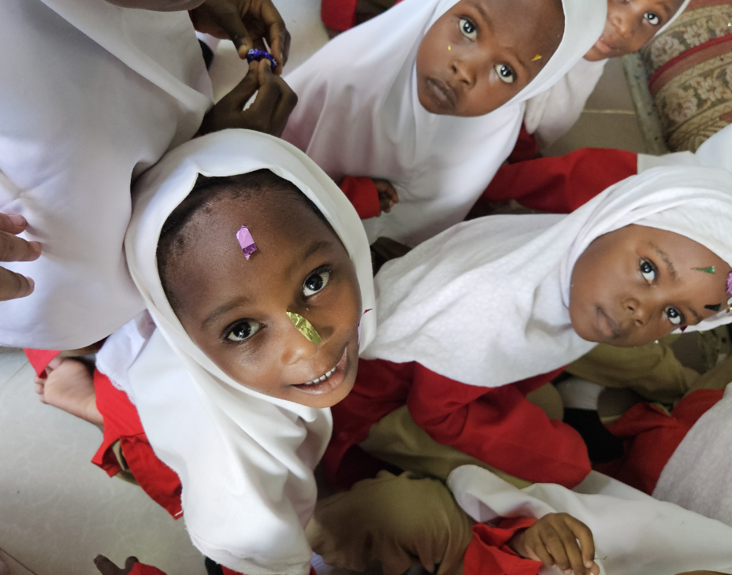
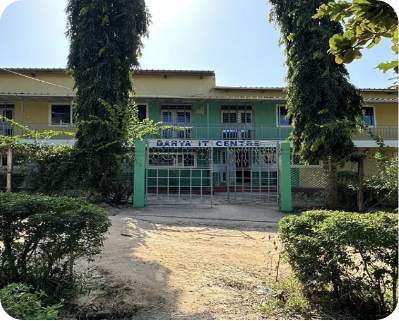

MANY PATHS. ONE COMMUNITY.
Big futures.
Begin here.
From first discoveries to professional ambitions.
Find your place at Wali Ul Asr Education Centre.
LEARNING WITH PURPOSE
01 / FIND YOUR BEGINNING
A different stage.
The same possibility.
Choose a stage to explore the schools
and colleges within our community.
MORE THAN A SCHOOL NAME
Learning that reaches
beyond the classroom.
WEC brings education and community purpose together. Its schools and colleges form part of WIPAHS’s commitment to learning and opportunity in Tanzania.
Explore our educational journey →02 / TAKE A LOOK AROUND
There’s room
to grow here.
Explore the spaces on our campus.
Select a place to step inside.

Real campus photographs from WEC. Confirm availability and arrangements with your chosen school.
03 / YOUR NEXT CHAPTER
Less searching.
More starting.
Choose your school. Get the right contact and a practical application checklist.
- 01
Talk to admissions
Confirm entry requirements, fees, the current intake and available places.
- 02
Prepare your application
Use the official form and check the documents required for your level.
- 03
Agree your next steps
Ask the school how to submit, and whether an assessment or interview applies.
YOUR PREPARATION CHECKLIST
Checklist ticks stay in this tab only. They do not submit an application. Confirm the linked form is current with admissions.
04 / LIFE BETWEEN THE LESSONS
A community
you can grow into.
Curiosity doesn’t stop when a lesson ends.
WEC’s public information describes activities including debate, scouting, arts and crafts, maths and language clubs.
Activities vary. Ask your chosen school about its current programme.
05 / A WIPAHS PURPOSE
A place to learn.
A reason to give.
Help more children access education, guidance and the opportunity to build their future.
WIPAHS student sponsorship
Published on WIPAHS’s education appeal. Confirm current programme terms on the official giving page.
Explore the student sponsorship programme through WIPAHS.
Design preview. No payment is taken on this site.
GOOD QUESTIONS. CLEAR NEXT STEPS.
Before you
begin.
Where do I find fees and intake dates?
Contact the relevant school using the admissions selector above. Fees, deadlines and available places should be confirmed directly before applying.
How do I choose between the colleges?
The college stage introduces CTTC, A3 Institute of Professional Studies and early childhood education. Contact admissions to confirm current courses, entry qualifications and accreditation for your intended programme.
Can I learn about boarding?
WEC lists primary accommodation and separate boys’ and girls’ secondary schools. Ask admissions about boarding availability, meals, visits and the arrangements for your school.
How can I support education?
Use the support section to explore student sponsorship or a donation. The final payment and current programme information are on the official WIPAHS website.
EVERY JOURNEY NEEDS A BEGINNING.